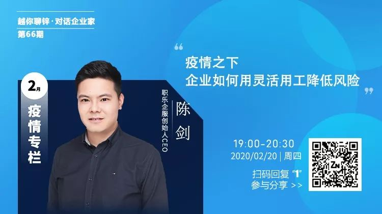

我是互联网人，我没有做逃兵
原文链接 备份链接 《战疫口述记》，是燃财经在新型冠状病毒肺炎期间推出的特别栏目，记录疫情亲历者的观察和感受。本文为第6篇，查看前5篇请点击《我和公司都快熬不住了》《节后返京，太太太南了》《我的“流浪”春节》《农村这样防肺炎》《我在武汉 …

文/雷成林
编辑/大风
突然爆发的疫情几乎让所有的线下门店停摆。在实体业溃败之后，电商护住了城市的血脉，快递员、外卖小哥、线上买菜维持着城市的运转。
在农村，疫情导致各地封村封路，所有的线下交易暂停，农户的果蔬被滞留在地里。人民日报联合淘宝发起“爱心助农”行动，设立10亿助农基金，开通绿色物流专线，打开滞销农产品的销路。
在这场战“疫”的后方，阿里、京东多家平台邀请医学专家直播，针对新冠型病毒做详细解答，给人们吃下定心丸。
但更多的人充当着红细胞的角色，为湖北输送物资。
大年三十凌晨，薇娅紧急筹备口罩、消毒水和即时食品等价值100万的物资，输送到武汉两家定点医院，又捐款100万。从明星捐款单看得出，她是捐款最早，捐款数额最大的公众人物之一。
从疫情爆发直到现在，薇娅的直播间不断有粉丝询问口罩的链接。
需求意味着流量，但薇娅没有上过口罩。她反复解释，“不用再刷了，现在的口罩都没有质量保障，即使有，也应该捐到前线更需要的人手上。”
淘宝粉丝接近1500万，双十一销售额30亿，单场最高观看量4000万……数字足以说明薇娅在淘宝直播“销售女王”的地位。她的举动是行业的风向标，通过她可以窥见整个行业在这场疫情中所做的努力。
以下是锌财经专访薇娅内容：
锌财经：大概是在什么时候你们的直播间开始讨论新型肺炎这事？
薇娅：其实在春节的第一天也就是年初一的晚上我就开了直播，和大家来讨论新型肺炎的事件。当时我就是觉得需要第一时间提高大家的防护意识，因为一开始可能很多人还没有真正意识到事态的严重性；第二就是和大家科普官方提出的防护措施，例如戴口罩、勤洗手、不聚会等等；最后是安抚和互相勉励，希望大家不信谣、不传谣，科学防疫，一起加油。
锌财经：新型肺炎爆发对于您产生了什么影响？
薇娅：最大的影响就是心态吧。因为我知道现在大家出门不便，很多薇娅的女人告诉我，他们缺吃的、缺用的、缺口罩、缺消毒水等等。我一开始非常着急，一方面工厂没法正常开工，第二个即使有库存，现在物流很多也发不出去。但是我的团队还是一直在坚持，尽可能地去找，去满足大家，帮助大家。
当然对我还有一个影响就是我能有更多的时间陪伴我的家人。可能很多在外工作的游子和我一样，陪着父母孩子的时间不多。外面疫情防控，那我们就管好小家，让家里更温暖。
锌财经：大年初一，在您的直播间看见一个短视频，上面显示您捐了总价值约为100万元的物资。是什么促使您想到为武汉捐物资的？
薇娅：其实是我在年二十九就看到很多疫情新闻以及武汉一线医院的物资已经开始亮红灯的报道，所以非常担心如果医院物资缺乏，一线医护人员就会很危险。除了口罩和消毒水这些医疗物资之外，我还看到几个医生的微博，发现他们因为各种原因现在没法好好吃饭，经常以泡面应付一下。我们就很担心医护人员的营养跟不上，于是立即准备了相对更健康营养的速食或者自热食品，希望他们能吃上热饭。他们更需要照顾好自己的身体。
锌财经：了解到您不仅捐了钱，还捐了物。在这种情况下，筹到合格的医用产品很难，您大概是什么时候开始筹备的？如何选择符合标准的产品？
薇娅：捐钱是希望我能为一线医疗团队的建设和保障做出一点点的贡献，但是除此之外，我作为一名主播，而且是全品类主播，我希望我能用自己的经验和资源，尽可能更多地帮助到一线的医护人员，贡献一点点力量。
我们从年29晚上决定要做这件事，一直到大年三十的凌晨三四点，团队很多同事都响应号召，自发加入到工作中，寻找和筛选审核符合要求的货源。因为时间紧急，为了保证品质，所以我们都是从已经合作过的品牌中一家一家去联系，到了大年三十的晚上就全部确认合作了。
锌财经：如何联系到武汉的医院的？
薇娅：因为一开始网上有很多的捐款渠道和热线，我们也有考虑过直接捐赠给官方机构，这样对我们来说是更加方便的。但是，我们想更快将物资直接送到一线医护人员手上，所以当下决定还是争取直接联系医院。于是公关部根据网上的公开信息，先筛选出武汉第一批定点医院，尤其是相对不是最热门的医院，因为我们担心可能这些医院受到的关注少，会更加缺物资。我们花了一天时间，一家家医院打电话联系，同时也发动了各种人脉资源。
锌财经：运输这么多物资并不是个小工程，尤其现在还是特殊时期，有碰到什么困难吗？
薇娅：当时是1月24号大年三十那天，武汉刚封城的前几天所有物资都很难进去。我们公关部和招商部的小伙伴从1月24号开始就每天晚上随时待命，分别与商家和医院工作人员沟通物流（当时的顺丰的武汉专线还没有这么正式的开通）。
打电话给顺丰的工作人员时，工作人员告诉我们，“暂时还没有接到武汉专线的上级命令。”所以我们在和商家沟通物流时候也是没有十足的信心一定能立马运上路。又联系了其他的物流公司，后来联系到了中通快递，中通的工作人员了解到我们的物资是援助武汉医院，同意运输。公司招商部的小伙伴和商家都很给力，自嗨锅在24号晚上就开始盘货装车了。
运输过程中还遇到了小插曲。运输车在26号凌晨到达收费站，但因为封城，车被拦截在距离目的地20公里的巨龙收费站，从凌晨3点到早上8点10分车辆还没得到放行。特别不巧的是因为24号和25号两天，我们都是基本晚上没睡觉地工作，26号当天都休息了会儿，没有及时看到车辆被拦截的消息。我们醒来后立马和医院工作人员沟通，医院工作人员也在第一时间给到我们介绍信（就是类似一种通行证），车辆才被放行。我们招商部的宇贤从凌晨3点安抚司机的情绪，一直工作到早上。终于在1月26号下午1点左右我们的自嗨锅到达湖北省中医院，大家悬着的心也落了地。当时我们都有一种想落泪的冲动。
锌财经：新型肺炎的爆发，武汉封城这些事会让您在直播间的选品上做出哪些调整吗？
薇娅：除了保质期相对较短的产品，例如一些现食现卖的食品，短时间内可能跟不上，还是会尽量上大家留言表示最想要的产品，因为现在的物流需要更好的配合到疫情的防控，所以大家都能理解运输和收货时间的问题。我现在直播的目的，更多的就是陪伴粉丝，每天多和大家聊聊家常，聊聊各种好物以及怎么用等等，作为大家的好朋友陪伴在大家身边。
锌财经：您不上合规口罩是因为政府统一管理了，输送到最需要的地方，但是淘宝直播平台里还是可以看见很多主播卖口罩。那有粉丝不能接受您的解释吗？会影响您的流量吗？
薇娅：粉丝都能理解，因为这是事实，所以并不会有影响。就像刚刚说的，我的存在是陪伴大家，同时帮大家去找想要的好物，我首先就要保证这个产品它的质量合格、来源渠道合规。
锌财经：现在口罩这么紧缺，身边的亲戚朋友肯定也很需要，那您有通过渠道为他们准备一些吗？
薇娅：其实并没有，因为如果有渠道，能够供给医院我就希望帮助一线医护人员，他们才是最需要的。我们现在还是靠朋友“接济”，不过我也希望大家能够和我在直播间一直说的一样，防止疫情传播最好的方式就是不要出门！
锌财经：看着确诊数字一天天增加，现在每个人都很焦虑，在您的直播间有这种气氛吗？您又如何安抚他们的？
薇娅：我觉得我的直播间焦虑并不多，只是会有一些新朋友进来希望我能帮忙找口罩，但是薇娅的女人都会帮忙解释，因为大家都和我想的一样，最好不出门，口罩给到最需要的地方，最需要的人。大家在直播间聊聊家里每天的笑事糗事，告诉我他们想要什么，以及最近新加的“项目”——“云吸猫”。不时就叫我家的黑猫出场和大家打招呼，希望这样大家可以每天有一个互动的窗口，和一群阳光向上的朋友侃大山，这就是我和薇娅的女人以及薇娅的骑士。
锌财经：您有粉丝是湖北的吗？在这段时间，他们买的最多的是什么？他们在直播间有和您说过他们此刻的生活吗?
薇娅：当然，其实最近他们想要的很多，但是碍于物流，绝大多数东西他们都没有办法购买，但是他们还是在直播间和大家聊天分享。他们很多人都表示现在生活比较不便，一开始也会担心物资，但好在政府和社会各界人士的支持，这些现在倒不是那么担心，也相信疫情很快就会过去，现在他们大多数都是在家乖乖待着，自我隔离，虽然买不了什么，但也来直播间和我和大家聊聊天。
锌财经：在这个特殊时期，每个人都在贡献自己的力量。您觉得作为一名主播，能为社会做些什么？
薇娅：两点吧。第一点就是帮助大家去寻找各种需要的却不方便出门买的产品，同时和物流保持联系，确定各个地区的物流情况，及时告知到大家；第二点就是陪伴，陪伴除了消磨无聊时光，更希望能够安抚和鼓励更多的薇娅的女人，让大家都保持着积极向上的心态，并以此去鼓励更多人。
锌财经：这段时间很多主播都停播了，因为这段时间确实太危险了，那为什么您还是在疫情没有过去的情况下开始直播呢？
薇娅：看过我这几天直播的都知道，我在家里直播，所以送样品过来的同事都是样品放门口然后离开，并不会直接接触，快递盒子都是消毒后再拿进来。所以大家还是非常注意防护措施的。因为每天很多的粉丝私信我要各种东西，或者最近更多的就是私信我怎么还没有直播，所以我觉得还是要做好自己该做的工作，如果在这个时间段还能帮助到大家，那更是何乐而不为了。



原文链接 备份链接 《战疫口述记》，是燃财经在新型冠状病毒肺炎期间推出的特别栏目，记录疫情亲历者的观察和感受。本文为第6篇，查看前5篇请点击《我和公司都快熬不住了》《节后返京，太太太南了》《我的“流浪”春节》《农村这样防肺炎》《我在武汉 …
原文链接 备份链接 武安医生（化名）所在的医院是孝感市三家抗疫医院之一。距离武汉66公里的孝感是距离武汉最近的地级市，截止到1月28日上午，有确诊病例173例。与暴风眼武汉一样，以孝感为代表的武汉周边小城也正在经历着决战时刻。 坐诊之 …
原文链接 备份链接 新型冠状病毒疫情像是一场突如其来的阴霾，在这个冬天笼罩了华中大地。相较于最受关注的武汉市民，周边城市的人们，像是处在阴霾边缘，遭受侵袭，却又不常被看见。面对重重困难，孝感、黄冈、黄石、信阳、荆州、天门……各个城市的百姓 …
原文链接 备份链接 自新型肺炎疫情爆发以来，湖北乃至全国多个省份的医院因防疫物资短缺，向社会发出求助。而另一种声音却在说防疫物资是充足的，没有短缺。一时之间，防疫物资成为了薛定谔的猫。 今日来信的这位作者，便是自发为一线医院筹集防疫物资的 …
原文链接 备份链接 医疗防护资源不足是常态，各地资源调配需平衡，“灯下黑”区域渐次光亮，但少数地区的疫情宣传依旧不到位 外地务工返乡者最担忧的问题是年后经济收入断流、地域歧视，担心节后可能无法返工 本文首发于南方人物周刊 文 | 本刊记 …